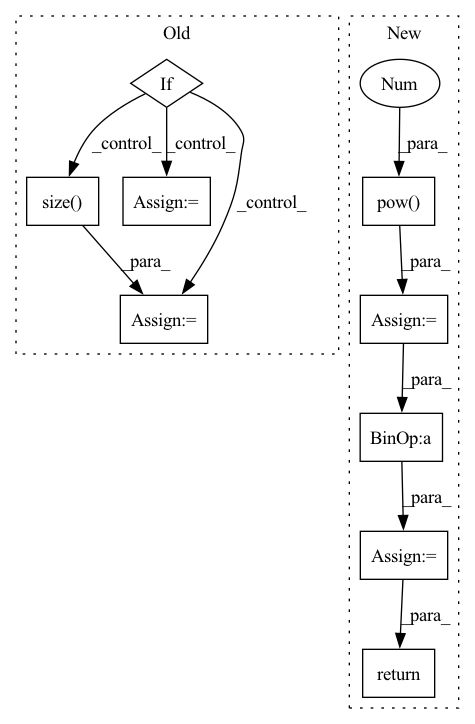

Pattern ID :10200

Before Change
index = edge_index[dim]
if edge_weights is None:
if isinstance(edge_index, Tensor):
edge_weights = torch.ones(edge_index.size(1), dtype=torch.int,
device=edge_index.device)
else:
edge_weights = np.ones(edge_index.shape[1], dtype=np.int)
degree = weighted_degree(index, edge_weights, num_nodes=num_nodes)
return edge_index, edge_weights / degree[index]
After Change
if backend is torch_sparse:
assert edge_weights is None
deg = edge_index.sum(dim=dim).to(torch.float)
deg_inv = deg.pow(-1.0)
deg_inv[deg_inv == float("inf")] = 0
edge_index = deg_inv.view(-1, 1) * edge_index
return edge_index, None
index = edge_index[dim]
degree = weighted_degree(index, edge_weights, num_nodes=num_nodes)
In pattern: SUPERPATTERN
Frequency: 3
Non-data size: 9
Instances
Fragment ID: 36002797
Project Name: torchspatiotemporal/tsl
Commit Name: f28e5a2fddc34eeb90a13c113512c8ab12b6138b
Time: 2022-07-20
Author: ivan.marisca@hotmail.it
File Name: tsl/ops/connectivity.py
M Class Name: AnonimousClass
N Class Name: AnonimousClass
M Method Name: normalize(4)
N Method Name: normalize(4)
M Parent Class:
N Parent Class:
M File Name: tsl/ops/connectivity.py
N File Name: tsl/ops/connectivity.py
M Start Line: 181
M End Line: 187
N Start Line: 215
N End Line: 225
'>
Before Change
index = edge_index[dim]
if edge_weights is None:
if isinstance(edge_index, Tensor):
edge_weights = torch.ones(edge_index.size(1), dtype=torch.int,
device=edge_index.device)
else:
edge_weights = np.ones(edge_index.shape[1], dtype=np.int)
degree = weighted_degree(index, edge_weights, num_nodes=num_nodes)
return edge_index, edge_weights / degree[index]
After Change
if backend is torch_sparse:
assert edge_weights is None
deg = edge_index.sum(dim=dim).to(torch.float)
deg_inv = deg.pow(-1.0)
deg_inv[deg_inv == float("inf")] = 0
edge_index = deg_inv.view(-1, 1) * edge_index
return edge_index, None
index = edge_index[dim]
degree = weighted_degree(index, edge_weights, num_nodes=num_nodes)
'>
Fragment ID: 36002796
Project Name: torchspatiotemporal/tsl
Commit Name: 50089afdf23de12eb6d11e9d5e7e64d949d45611
Time: 2022-08-18
Author: ivan.marisca@hotmail.it
File Name: tsl/ops/connectivity.py
M Class Name: AnonimousClass
N Class Name: AnonimousClass
M Method Name: normalize(4)
N Method Name: normalize(4)
M Parent Class:
N Parent Class:
M File Name: tsl/ops/connectivity.py
N File Name: tsl/ops/connectivity.py
M Start Line: 181
M End Line: 187
N Start Line: 215
N End Line: 225
'>
Before Change
assert n_dim in (3, 4)
if n_dim == 3:
n_channels = 1
batch_size, n_freqs, n_frames = input.size()
else:
batch_size, n_channels, n_freqs, n_frames = input.size()
input = input.reshape(batch_size * n_channels, n_freqs, n_frames)
After Change
entry_count = entry_count.expand_as(cumulative_sum) // [1, T] => [B, T]
cumulative_mean = cumulative_sum / entry_count // [B, T]
cumulative_var = (cumulative_pow_sum - 2 * cumulative_mean * cumulative_sum) / entry_count + cumulative_mean.pow(2) // [B, T]
cumulative_std = torch.sqrt(cumulative_var + EPSILON) // [B, T]
cumulative_mean = cumulative_mean.reshape(batch_size * num_channels, 1, num_frames)
cumulative_std = cumulative_std.reshape(batch_size * num_channels, 1, num_frames)
normed = (input - cumulative_mean) / cumulative_std
return normed.reshape(batch_size, num_channels, num_freqs, num_frames)
def norm_wrapper(self, norm_type: str):
if norm_type == "offline_laplace_norm":
'>
Fragment ID: 36002798
Project Name: haoxiangsnr/fullsubnet
Commit Name: 321920989a4aa255158770213e814befc8f94f27
Time: 2021-02-08
Author: haoxiangsnr@gmail.com
File Name: audio_zen/model/base_model.py
M Class Name: BaseModel
N Class Name: BaseModel
M Method Name: cumulative_layer_norm(1)
N Method Name: cumulative_layer_norm(1)
M Parent Class: nn.Module
N Parent Class: nn.Module
M File Name: audio_zen/model/base_model.py
N File Name: audio_zen/model/base_model.py
M Start Line: 225
M End Line: 261
N Start Line: 276
N End Line: 304